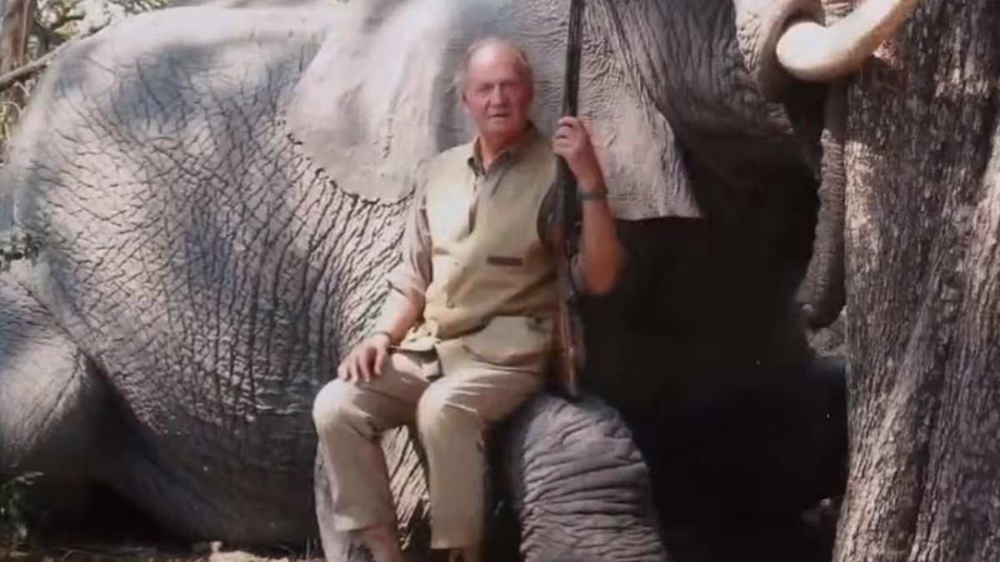
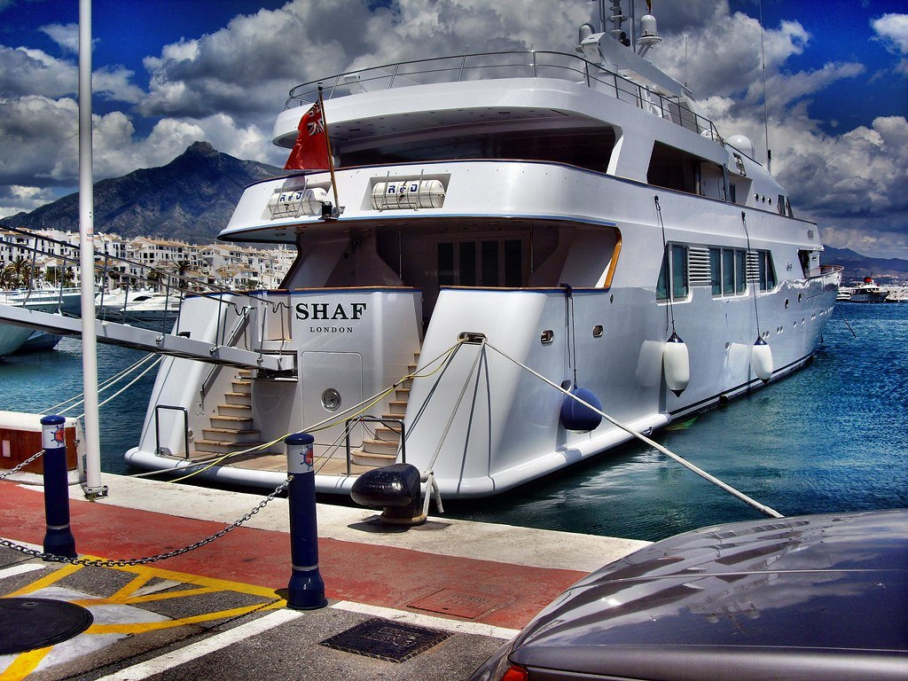
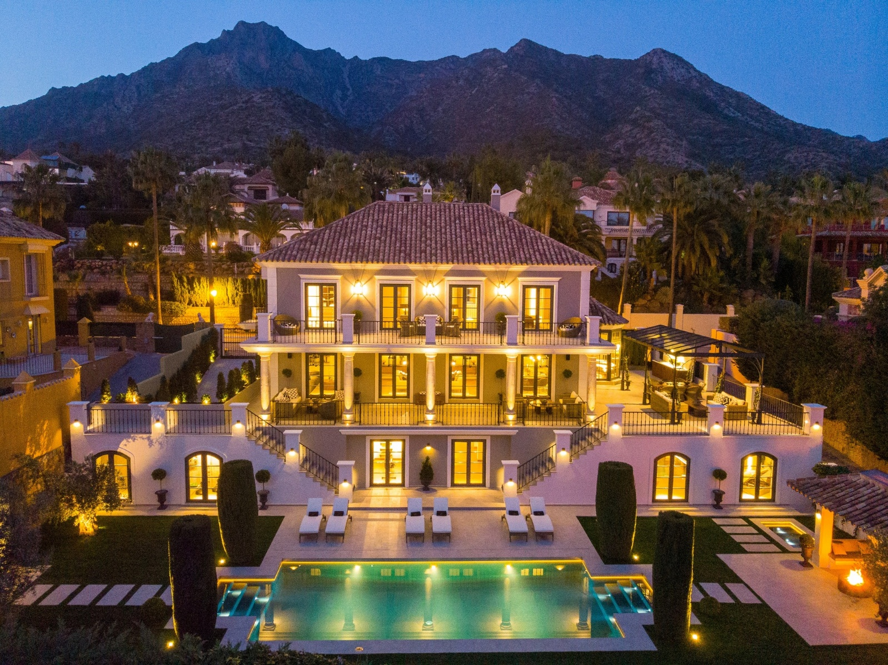

Hiszpańska monarchia w ostatnich piętnastu latach przeżyła coś, co można odczytać jako podręcznikowy przykład tego, jak dwór królewski może stać się zakładnikiem własnych rodzinnych kompromisów – i jak szybko rozpływa się kapitał reputacyjny, gdy opinia publiczna zaczyna pytać o rzeczy najprostsze: kto za co płaci, kto z kim robi interesy, kto jest czyim gościem i dlaczego.
Hiszpania jest monarchią konstytucyjną. Król nie jest politykiem wykonawczym, jest symbolem ciągłości państwa. I właśnie dlatego jego największą walutą jest zaufanie. Gdy je traci, nie jest to tylko osobisty dramat jednej rodziny – to wstrząs dla instytucji.
Juan Carlos: król wyznaczony przez Franco, który nie poszedł jego drogą
Juan Carlos I został wybrany przez generała Franco i w 1969 roku oficjalnie wyznaczony na jego następcę. Zakładano, że będzie kontynuował autorytarny kurs reżimu. Po śmierci Franco w 1975 roku poszedł jednak inną drogą i poparł przejście do pluralistycznej demokracji i systemu konstytucyjnego.
Kluczowym momentem był 23 lutego 1981 roku, gdy grupa funkcjonariuszy Guardia Civil pod wodzą podpułkownika Tejero wtargnęła do parlamentu i wzięła posłów jako zakładników. Telewizyjne wystąpienie króla w mundurze naczelnego dowódcy sił zbrojnych, w którym odrzucił pucz, odegrało zasadniczą rolę w jego udaremnieniu. Narodził się silny mit: KRÓL, KTÓRY URATOWAŁ DEMOKRACJĘ.
Ten mit był w Hiszpanii tak silny, że wiele z zakulisowego życia króla długo pozostawało poza zainteresowaniem opinii publicznej.
Tyle że monarchia stoi na symbolach. A symbol może upaść w jednej chwili. Dla Juana Carlosa tą chwilą był kwiecień 2012 roku i Botswana.
Botswana 2012: słoń, złamane biodro i pytania, których nie dało się już ignorować
Juan Carlos wybrał się prywatnie do Botswany na safari połączone z polowaniem na słonie. Podróż miała pozostać ukryta przed opinią publiczną. Tyle że król podczas pobytu złamał biodro i musiał być pilnie przewieziony do Madrytu. Dopiero wtedy Hiszpania dowiedziała się, gdzie była głowa państwa – i w jakim stylu.
Krótko po operacji król wypowiedział zdanie, które przeszło do historii: „Lo siento mucho. Me he equivocado y no volverá a ocurrir." („Bardzo mi przykro. Popełniłem błąd i to się więcej nie powtórzy.")
Tyle że przeprosiny nie wystarczyły. Po raz pierwszy zaczęto otwarcie mówić, że problem nie leży tylko w polowaniu na słonie.
Hiszpania przechodziła wtedy przez głęboki kryzys gospodarczy, bezrobocie przekraczało 20%, młodzi ludzie nie mieli pracy. Luksusowe safari w Afryce sprawiało wrażenie kpiny.
Botswana nie była jednak tylko o polowaniu.
To właśnie ta podróż znacznie uwidoczniła także jego pozamałżeński związek z Corinną Larsen, która była obecna na safari. A przede wszystkim otworzyła szersze pytanie: skąd pochodzą pieniądze, w jakich kręgach obraca się król i jakie ma powiązania z zagranicznymi elitami – zwłaszcza z monarchiami Zatoki Perskiej.
Saudyjskie powiązania: stare przyjaźnie i nowe podejrzenia
Juan Carlos miał z władcami Zatoki Perskiej długotrwałe relacje już od lat 70. W czasie kryzysu naftowego odgrywał rolę pośrednika przy nawiązywaniu kontaktów z Arabią Saudyjską. Stopniowo między nim a niektórymi członkami saudyjskiej rodziny królewskiej wytworzyły się osobiste więzi.
Udokumentowane jest, że saudyjscy władcy spędzali lata w Hiszpanii, zwłaszcza w okolicach Marbelli i Puerto Banús, gdzie mieli swoje rezydencje i gdzie cumowały ich jachty (Shaf London znajdziesz w Puerto Banús i dziś). Juan Carlos odwiedzał ich podczas tych pobytów. Sama obecność na jachtach ani kontakty towarzyskie oczywiście nie są przestępstwem – ale w kontekście późniejszych afer finansowych te relacje zaczęto postrzegać inaczej.
I właśnie tu pojawia się nazwisko Mohameda Eyada Kayalego.
Mohamed Eyad Kayali: most między Botswaną a Zatoką Perską
Kayali jest w poważnej hiszpańskiej prasie wspominany przede wszystkim jako człowiek, który zaprosił króla do Botswany. Teksty śledcze (np. Orient XXI) opisują go zarazem jako przedsiębiorcę powiązanego z saudyjskim kręgiem i osobę, która zajmowała się logistyką i sprawami majątkowymi saudyjskich elit w Hiszpanii.
Południowoafrykańskie śledztwo amaBhungane, opierające się m.in. na Panama Papers i Paradise Papers, łączy go następnie ze strukturami offshore, w których figurował jako dyrektor lub posiadacz pełnomocnictw w spółkach powiązanych z saudyjskimi aktywami – nieruchomościami, firmami czy luksusowym majątkiem.
Nic z tego samo w sobie nie jest wyrokiem. Ale razem tworzy to obraz środowiska, w którym mieszają się polityka, biznes, luksus i nieprzejrzyste struktury.
I właśnie w to środowisko Botswana wpasowała się aż zaskakująco dokładnie.
Corinna Larsen: dar 100 milionów dolarów i szwajcarski ślad
Corinna Larsen nie była tylko kochanką króla. Stopniowo stała się kluczową postacią w debacie o dziwnych przepływach finansowych.
W 2008 roku saudyjski król Abdullah przelał 100 milionów dolarów na konto fundacji Lucum, zarejestrowanej w Panamie, której założycielem był Juan Carlos. Konto prowadzono w szwajcarskim banku Mirabaud. Według oświadczenia Juana Carlosa chodziło o osobisty dar.
W 2012 roku część tych środków (około 65 milionów dolarów) przelano na konto Corinny Larsen. Król twierdził później, że chodziło o osobisty dar. Szwajcarskie śledztwo badało, czy pieniądze miały związek z prowizjami za kontrakt na kolej dużych prędkości między Mekką a Medyną. Postępowanie ostatecznie umorzono bez aktu oskarżenia z powodu braku dowodów.
Formalnie więc Juan Carlos nie został w tej sprawie skazany. Ale szkoda reputacyjna była ogromna.
Zięć, który poszedł siedzieć: sprawa Nóos
A potem przyszedł kolejny cios – tym razem z najbliższego kręgu rodzinnego.
Iñaki Urdangarin, mąż infantki Cristiny, był w latach 90. gwiazdą sportu. Reprezentował Hiszpanię w piłce ręcznej, zdobywał medale olimpijskie, uchodził za nowoczesną, sympatyczną twarz monarchii. Pamiętam jego ślub z infantką Cristiną w barcelońskiej katedrze św. Eulalii – był wtedy ulubieńcem publiczności.
Sprawa Nóos pokazała jednak inny obraz. Urdangarin za pośrednictwem instytutu non-profit Nóos zdobywał publiczne kontrakty od rządów regionalnych, przy czym część środków była według sądu wyprowadzana do prywatnych struktur.
W 2018 roku został prawomocnie skazany na pięć lat i dziesięć miesięcy więzienia za sprzeniewierzenie, oszustwa i nadużycie wpływów. Trafił do odbywania kary w więzieniu Brieva w prowincji Ávila. Część kary rzeczywiście odbył, później złagodzono mu reżim.
Małżeństwo z infantką Cristiną nie przetrwało presji całej sprawy – po latach stopniowego rozstawania ich rozwód sfinalizowano w 2024 roku.
To był moment, w którym z osobistych skandali zrobił się kryzys systemowy.
Filip VI: oddzielenie instytucji od rodziny
Syn Juana Carlosa, Filip VI, po wstąpieniu na tron zrozumiał, że monarchia może przetrwać tylko wtedy, gdy zdystansuje się od problemów.
W 2020 roku publicznie ogłosił, że zrzeka się jakiegokolwiek przyszłego spadku po ojcu i że Juan Carlos traci państwową apanaż. Król wysłał tym jasny sygnał: instytucja nie jest tarczą dla rodzinnych afer.
Krótko potem Juan Carlos udał się na emigrację do Zjednoczonych Emiratów Arabskich.
Był to dramatyczny krok. Ale była to także próba ratowania instytucji.
Po co o tym przypominać
Istnieją rzeczy udowodnione sądownie. I istnieją rzeczy, które pozostają w szarej strefie – śledztwa, przecieki dokumentów, podejrzenia, które nigdy nie przeradzają się w wyrok.
Tyle że monarchia to nie tylko konstrukcja prawna. To instytucja symboliczna.
A symbol nie może długo przetrwać, jeśli opinia publiczna nabierze poczucia, że istnieją dwie płaszczyzny rzeczywistości: jedna dla zwykłych obywateli i druga dla rodziny u dworu.
Dlatego pewien tekst o monarchii przypomniał mi właśnie Hiszpanię. Nowoczesna monarchia utrzyma się tylko wtedy, gdy potrafi powiedzieć „nie" także własnym ludziom. Gdy przyjmie, że rodzina nie stoi ponad prawem.
I że zaufanie traci się szybciej niż tron.
Fotografie
1 i 2 – hiszpański król Juan Carlos w Botswanie, zanim zranił biodro:


3 – jacht saudyjskiej rodziny królewskiej Shaf London cumujący w porcie Puerto Banús (Marbella, Hiszpania):

4 – tzw. Milla de oro (Złota Mila) w Marbelli, gdzie znajdują się pałace, rezydencje i wille europejskiego „jet-setu" oraz saudyjskiego króla Fahda:
